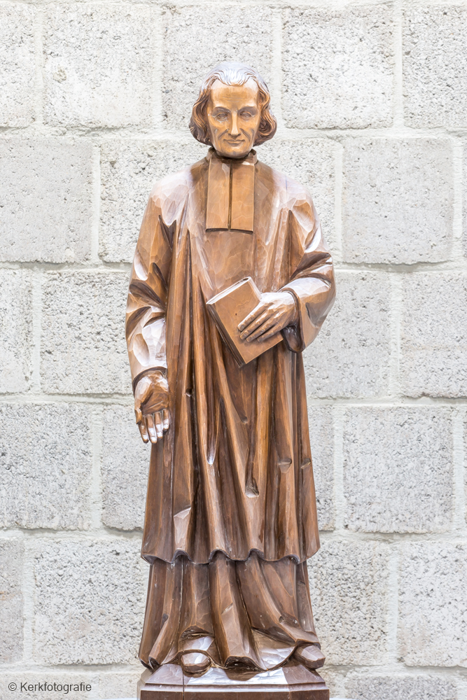

Jean Marie Vianney, de Pastoor van Ars, was een toegewijde priester en geliefd biechtvader. Zijn eenvoudige kerk groeide uit tot een bedevaartsoord. Hij werd in 1924 heilig verklaard. Zijn basiliek bevindt zich in Ars-sur-Formans.
This is the content for the selected item.